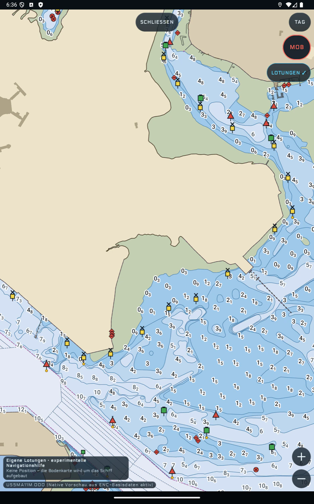

Ankerwache
Abstand zur gesetzten Ankerposition. Position und Datenzustand bleiben Teil der Anzeige.
Die neue seaFOX-Oberfläche · November 2026
Bootsdaten, Seekarte und Logbuch auf deinem Android-Tablet. Stelle dir den Überblick zusammen, den du an Bord brauchst.
In Entwicklung. Nicht für die alleinige Navigation bestimmt.
Hintergrund: generiertes Stimmungsbild
Instrumente
Ein gemeinsamer Instrumentensatz, drei Farbschemata: Tag, Nacht und Rotlicht. Ordne Anzeigen frei an, ändere ihre Größe und verteile sie auf deine Seiten.
Seekarte und Route
ENC-Vektorkarten direkt auf dem Tablet. Mit eigenen Wegpunkten und den Angaben für den nächsten Abschnitt.
Die Karten liegen lokal auf dem Tablet. Datenumfang und Aktualität richten sich nach den importierten Kartenzellen.

Illustration des Logbuch-Prinzips, keine App-Aufnahme.
Neu: integriertes Logbuch
Fahrtdaten und ausgewählte Ereignisse werden zum Logbuch. Ergänze deine eigenen Notizen und nimm die Aufzeichnung mit.
Simulierte Fahrtdaten werden nicht als echte Fahrt aufgezeichnet.
Überwachung
Ankerkreis, Mindesttiefe und AIS-Näherung werden unabhängig von der gerade sichtbaren Dashboard-Seite ausgewertet.
Abstand zur gesetzten Ankerposition. Position und Datenzustand bleiben Teil der Anzeige.
Eine eigene Alarmgrenze für die Tiefe, mit sichtbarem Alarmzustand und Stummschaltung.
Warnungen nach den eingestellten Grenzen für CPA und TCPA bis zur dichtesten Annäherung.
Bei laufender Überwachung machen Töne, optionale Sprachansagen und Android-Benachrichtigungen auf Alarme aufmerksam. Der Betrieb hängt auch von Berechtigungen und Geräteeinstellungen ab.
Weitere Entwicklung
Radar, Vorausschau-Sonar und Bodenkarte werden weiterentwickelt. Unterstützung und Prüfstand hängen von der jeweiligen Hardware ab.
ExperimentellEine zusätzliche Entwicklungslinie bereitet Tagesberichte mit einem Sprachmodell auf dem Gerät vor. Der Anschluss und die Geräteprüfung sind noch nicht Teil einer allgemein verfügbaren Freigabe.
In EntwicklungDie Verarbeitung von Funkmeldungen wird vorbereitet. Eine einsatzbereite Spracherkennung ist im aktuellen Integrationsstand noch nicht angeschlossen.
In VorbereitungStand November 2026
seaFOX wird mit automatisierten Prüfungen und auf ausgewählten Android-Tablets weiterentwickelt. Bord-Hardware und einzelne Anbindungen benötigen weitere Abnahmen.
seaFOX
Diese Seite zeigt den aktuellen Entwicklungsstand. Fragen und Rückmeldungen zur Website kannst du im öffentlichen GitHub-Projekt hinterlassen.
Zum Website-ProjektAnbieter im Impressum